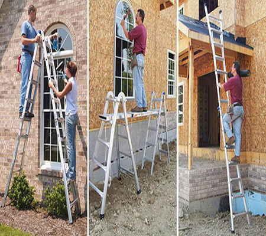
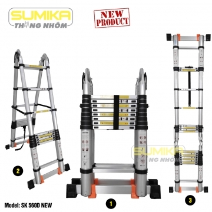
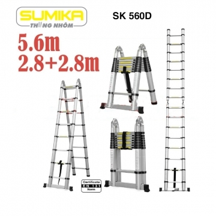
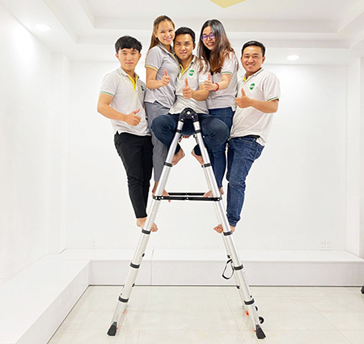

Tìm hiểu về dòng thang nhôm Sumika có tốt không?
Với người tiêu dùng Việt, thang nhôm không còn quá xa lạ, dần trở thành một sự lựa chọn hàng đầu hiện nay.
Một trong những thương hiệu thang nhôm được ưa chuộng hiện nay chính là Sumika.
Vậy thang nhôm Sumika có tốt không? Tìm hiểu ngay trong bài viết dưới đây nhé!

1. Thang nhôm Sumika là loại thang gì?
Thang nhôm Sumika là một thiết bị hỗ trợ người dùng trong quá trình leo trèo,
nâng đỡ chiều cao người dùng đến những khu vực cao hỗ trợ nhiều công việc xây dựng, sửa chữa, vệ sinh nhà ở.
Chất liệu thang được làm từ hợp kim nhôm cao cấp, nhẹ hơn so với các vật liệu khác và độ bền ưu việt hơn nên càng được ưa chuộng sử dụng cho gia đình, thợ điện, xây dựng.
2. Có mấy loại thang nhôm Sumika?
Thang nhôm Sumika bao gồm:
√ Thang nhôm rút đơn Sumika: là dòng thang ra đời mang theo luồng gió mới nhờ khả năng biến hình linh hoạt, rút gọn tiện lợi, dễ dàng mang vác cùng chất liệu thang cứng cáp, bền bỉ.
Ưu điểm của dòng thang này chính là có thể điều chỉnh bằng 1 tay khá đơn giản, khả năng chịu lực lớn, mang đến sự an toàn, chắc chắn trong quá trình thực hiện công việc trên một độ cao nhất định.
√ Thang nhôm rút đôi Sumika: được là từ chất liệu nhôm cao cấp, chống ăn mòn tốt và có thể chịu được độ nén cao. Thang được thiết kế dạng anten thu gọn nên có thể thu ngắn hay dài tùy thuộc vào nhu cầu sử dụng.
Bên cạnh đó, người dùng có thể sử dụng thang trong nhiều địa hình khác nhau bởi có thể gấp thang thành các chữ A, L, I
√ Thang nhôm chữ A Sumika: là sản phẩm thang đa năng có thể xếp thành chữ A. Chân thang được trang bị kích thước rộng kết hợp với đế cao su chống trượt nên leo trèo an toàn tuyệt đối.
Và đây cũng chính là dòng thang phổ biến được sử dụng rất nhiều trong đời sống nhờ tính an toàn và tiện lợi trong việc dùng và cất đặt.
√ Thang ghế Sumika: là dòng thang phù hợp với những công việc cần yêu cầu leo trèo trong gia đình, bất kỳ đối tượng nào cũng đều có thể sử dụng bởi trọng lượng nhẹ.
Chân thang được làm từ nhựa ABS với độ ma sát cao, chống trơn trượt và hoàn toàn không làm cho sàn nhà của bạn bị trầy xước. Sử dụng thang khá đơn giản, chỉ cần 1 tay giữ thang và tay còn lại có thể mở thang một cách dễ dàng.
Trang bị tay vịn giúp người dùng có thể đứng lên các bậc một cách vững chải.

3. Ưu điểm của thang nhôm Sumika
Thang nhôm Sumika ngày càng được ưa chuộng trên thị trường, sử dụng nhiều trong các công việc và sinh hoạt hàng ngày. Sản phẩm thang nhôm Sumkia sở hữu nhiều ưu điểm vượt trội:
√ Thang nhôm Sumika được sản xuất trên dây chuyền công nghệ hiện đại và chất lượng của Nhật Bản, đạt tiêu chuẩn an toàn Châu Âu cùng khâu kiểm định nghiêm ngặt trước khi đến tay người tiêu dùng.
√ Thang nhôm Sumika với đa dạng các loại thang, thiết kế chiều cao linh hoạt, giúp người dùng có thể leo trèo ở những chiều cao khác nhau.
√ Chất liệu nhôm siêu bền, nhẹ, chịu được lực lớn, đảm bảo an toàn trong quá trình sử dụng. Thang nhôm linh hoạt, lắp đặt dễ dàng, sử dụng được trong nhiều địa hình khác nhau.
√ Thang có độ bền cao bởi nhôm không dễ dàng bị oxy hóa nên có thể sử dụng an toàn trong điều kiện khí hậu ở Việt Nam. Tuổi thọ thang cao, nên hoàn toàn có thể đầu tư để sử dụng lâu dài.
√ Thiết kế thang nhôm Sumika đẹp, kiểu dáng hiện đại phù hợp với không gian sống tinh tế, sang trọng.
Vậy nên, với những ưu điểm mà thang nhôm Sumika sở hữu, chúng ta có thể khẳng định rằng, thang nhôm Sumika hoàn toàn tốt khi sử dụng.
4. Tư vấn chọn mua thang nhôm Sumika phù hợp
Kiểu thang phù hợp: lựa chọn loại thang với đặc trưng phù hợp với nhu cầu sử dụng riêng
- Với những công việc đơn giản trong gia đình, có thể lựa chọn dòng thang thang ghế, thang rút chữ A.
- Với những công việc ở xưởng sản xuất, công việc ngoài trời thì thang rút đôi là sự lựa chọn phù hợp, chống trơn trượt tốt.
Chiều cao rút gọn và tối đa: để đảm bảo các thao tác an toàn hiệu quả, nên chọn chiều cao tối đa theo đặc trưng công việc. Đối với công việc gia đình, nên chọn thang từ 3 – 5m là phù hợp. Còn công việc ngoài trời, chiều cao có thể lên đến hơn 10m.
Thang có thể rút gọn linh hoạt để cất trữ và mang đi một cách tiện lợi, đặc biệt là với công việc đặc thù phải mang đi một cách thường xuyên.

Tải trọng của thang: việc chú ý đến tải trọng của thang sẽ cho phép người dùng sử dụng một cách an toàn. Thông thường tải trọng thang nhôm Sumika thường rơi vào từ 150 đến 300kg. Người dùng cần kiểm tra các mối nối với thang trượt và rút gọn cần có thiết kế và chốt an toàn để bảo vệ thiết bị hiệu quả.

Các tin khác